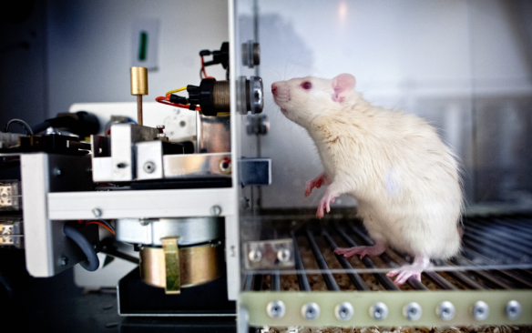

Frederic Skinner
Burrhus Frederic Skinner fue un psicólogo, filósofo social, inventor, y autor estadounidense. Condujo un trabajo pionero en psicología experimental y defendió el conductismo, que considera el comportamiento como una función de las historias ambientales de refuerzo.
Colaboraciones

Experimentops
Teoría de Skinner